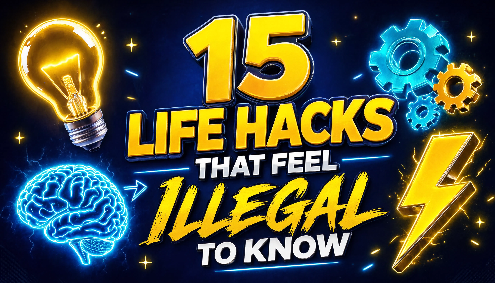

No fluff. No fake "miracle" tricks. Just 15 science-backed psychology tricks and life hacks that actually work in real life — and #6 will change your afternoons forever. ⚡

If a task takes less than 2 minutes — do it immediately. Reply to that email, wash that dish, hang that jacket. Tiny tasks pile up into mental clutter; killing them instantly keeps your brain feeling "in control" all day.
Ever walk into a room and forget why? That's the "doorway effect" — your brain resets memories when you change environments. The fix: walk back to the room you came from, and the memory usually pops right back.
In negotiations or tricky conversations, stay silent for 3–4 seconds after the other person finishes speaking. Most people hate silence and keep talking — revealing extra information, better offers, or their true position. Professional negotiators use this constantly.
Turn your phone's display to grayscale (Settings → Accessibility). Without colorful icons and red notification badges, your brain gets far less dopamine hits — and screen time drops dramatically, often within days.
Every 20 minutes, look at something 20 feet away for 20 seconds. It instantly reduces eye strain from screens and stops that "tired head" feeling after long work sessions. Your eyes literally have a reset button — this is it.
Drink a coffee, then immediately take a 20-minute nap. Caffeine takes ~20 minutes to kick in — so you wake up exactly when it hits, combining sleep recovery AND caffeine boost. Studies show it beats coffee or naps alone for alertness.
Your brain judges portions by how full the plate looks (the Delboeuf illusion). Same food on a smaller plate = your brain feels satisfied with less. Instant portion control with zero willpower.
Game music is literally engineered to keep you focused and moving forward without distracting you. Put on a Skyrim or Zelda soundtrack while studying or working — and watch your focus level quietly go up.
Want someone to like you? Ask them for a small favor — borrowing a pen, a quick opinion. Psychology research shows people who do you favors like you MORE, because their brain thinks: "I helped them, so I must like them."
Japanese railway staff use "point and call": physically point at the door lock and say "locked!" out loud. It cuts errors dramatically because it engages two extra senses. Use it for keys, stoves, and locks — never double-check twice again.
When you know what to do but feel resistance — count 5-4-3-2-1 and physically move before your brain talks you out of it. It interrupts the overthinking loop and activates your prefrontal cortex. Simple. Brutal. Effective.
Unfinished tasks haunt your mind (the Zeigarnik effect). Writing them down literally tells your brain "it's handled" — and the annoying mental loop stops. A $2 notebook beats a $2000 productivity course.
Sleep runs in ~90-minute cycles. Waking up mid-cycle = groggy and broken, even after 8 hours. Aim for 5 full cycles (7.5 hours) and set your alarm at a cycle end — you'll wake up weirdly refreshed.
A person's name is the sweetest sound to their brain. Use it naturally in conversation ("Thanks, Sarah!" instead of just "Thanks!") — people instantly feel more connected to you. Instant charisma, zero cost.
Feeling stressed or angry? Splash cold water on your face or hold something cold. It triggers the "mammalian dive reflex" — slowing your heart rate and literally cooling down your stress response in under a minute.
Made it to the end? You're officially a hack master. Here's a little reward for curious readers like you — don't miss it!
CLAIM YOUR BONUS ➜